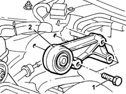
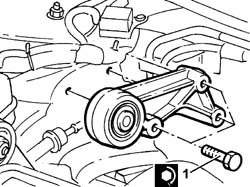

1008C16 BRACKET on BODY for reaction link - R.R.
- Path
- Procedures > 10 ENGINE > 1008 POWER UNIT SUPPORTS > 1008C power unit reaction elements > 1008C16 BRACKET on BODY for reaction link - R.R.
- Kind
- repair procedure (removal / refitting; the operation number is the code)
- Applies to
- engines: 2.4 JTD 20V; all production periods
- Interactive page
- https://sloeber94.github.io/elrnDB-lThss/en/#/849887
Applies to: engines: 2.4 JTD 20V; all production periods
 Removing
Removing
 Refitting
RefittingSee in Op. 1016A10 SOUND-PROOFING COVER - R.R.
See in Op. 7040D50 ENGINE COMPARTMENT UPPER SOUND INSULATION SHIELD - R.R.
See in Op. 1008C10 Power unit REACTION ROD - Replace
1. Undo the retaining bolts.
2. Remove the mounting bracket on the bodyshell for the reaction rod.

Applies to: engines: 2.4 JTD 20V; all production periods
Refitting
Removing1. Fit the reaction rod bracket and tighten the bolts securing it to the bodyshell to torque.
 | Value - daNm | Fastening | Component | Ø |
|---|---|---|---|---|
1 | 3 | Bolt | REACTION LINK ATTACHMENT BRACKET | M8 |

Applies to: engines: 2.4 JTD 20V; all production periods
See in Op. 1008C10 Power unit REACTION ROD - Replace
See in Op. 7040D50 ENGINE COMPARTMENT UPPER SOUND INSULATION SHIELD - R.R.